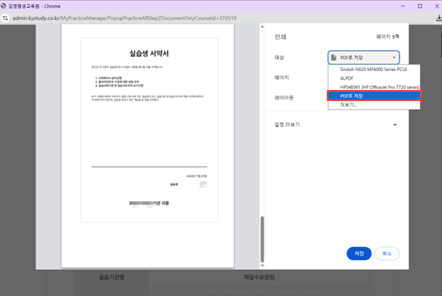
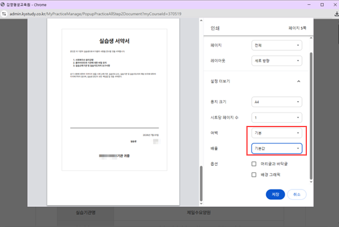
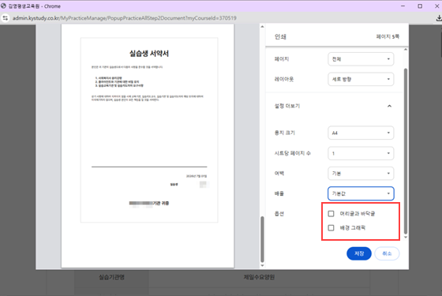
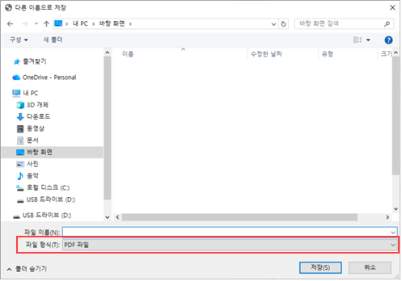

실습 신청서류
- 1번 ~ 4번까지의 파일을 모두 출력하여 서명 후 실습기관에 제출하여 주시기 바랍니다.
-
신청서 출력방법은 우측 [신청서 출력방법]을 클릭하면 확인가능합니다.
신청서 출력방법

신청서 출력방법
신청서 출력하기 방법
-
출력화면 내 대상 또는 프린터에서 [PDF로저장] 선택
실제 출력 시에는 실제 출력가능한 프린터 선택
-
설정 더보기 화살표 클릭 후 하단 여백 [기본], [기본값]선택

-
옵션 머리글 및 배경그래픽 체크 해제 후 저장 버튼 클릭
실제 출력 시에는 인쇄 버튼 클릭
-
원하는 파일 경로를 지정하고, 제목을 입력 후 [저장] 버튼을 클릭합니다.
파일형식 : PDF, PDF/A 문서(*.pdf)
-
저장경로에서 신청서가 PDF파일로 저장된 것을 확인할 수 있습니다.
-